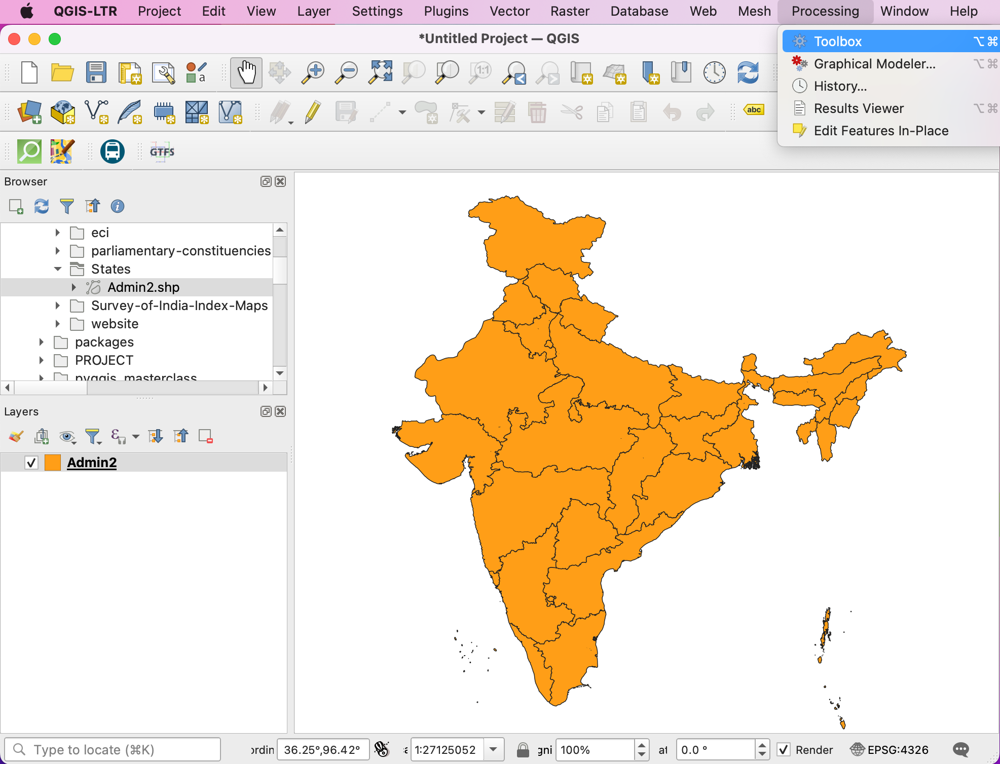
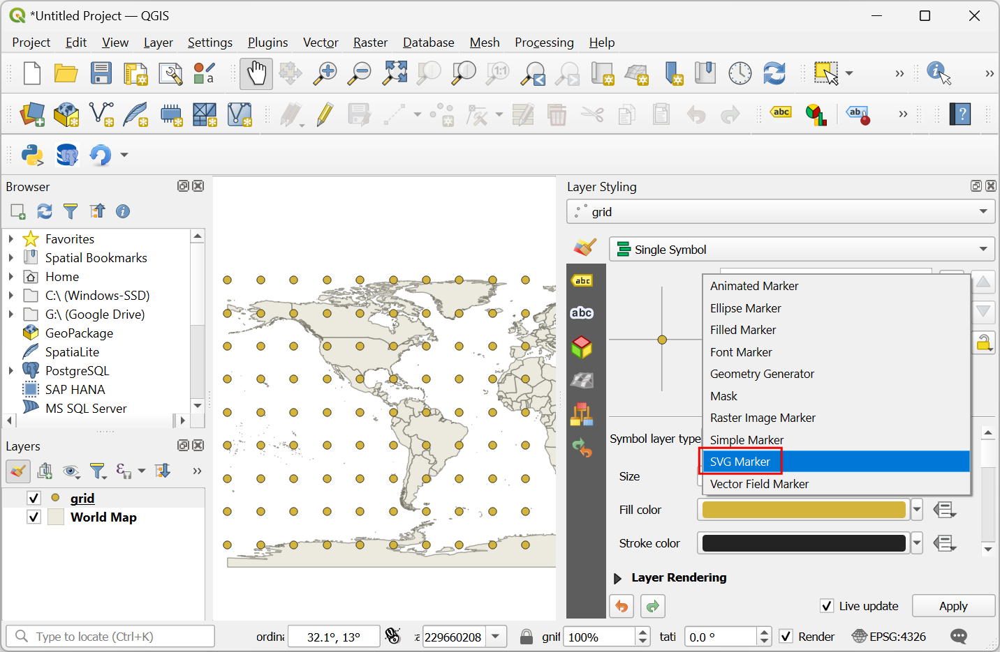
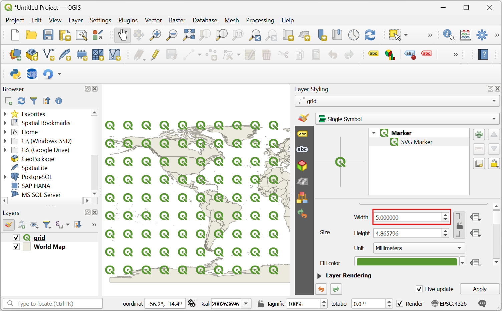
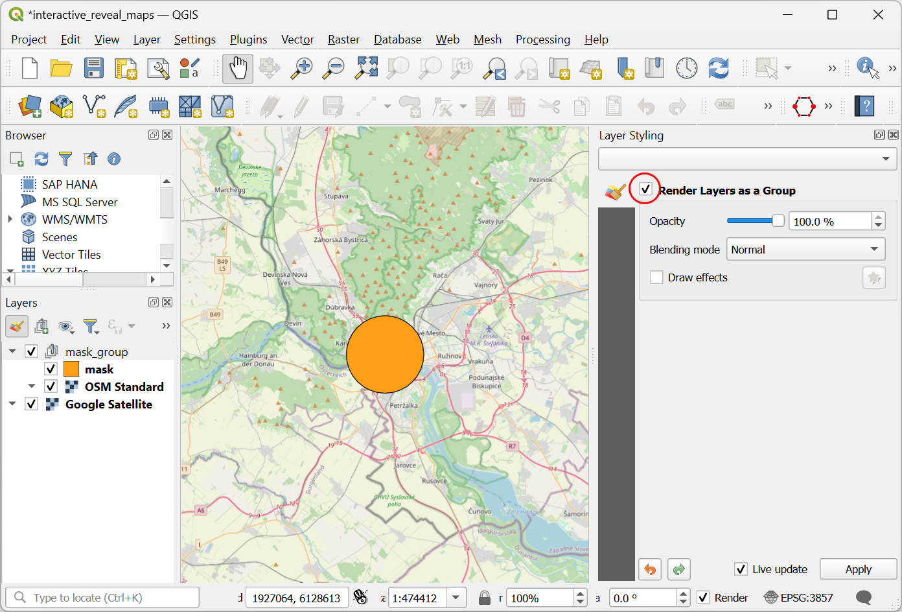

Dichtstbijzijnde faciliteit zoeken met Origin-Destination Matrix (QGIS3)¶
In de vorige handleiding, Basis netwerk visualisatie en routeren (QGIS3), leerden we hoe een netwerk te bouwen en het kortste pad tussen 2 punten te berekenen. We kunnen die techniek ook toepassen voor verschillende typen op netwerken gebaseerde analyses. Een van die toepassingen is om de Origin-Destination Matrix of OD Matrix te berekenen. Gegeven een set van punten van origine en een andere set voor bestemmingspunten kunnen we het kortste pad berekenen tussen elke paar van origine-bestemming en de reisafstand/tijd daartussen berekenen. Een dergelijke analyse is nuttig om de dichtstbijzijnde faciliteit tot een bepaald punt te lokaliseren. Een logistiek bedrijf zou, bijvoorbeeld, deze analyse kunnen gebruiken om de dichtstbijzijnde opslagplaats voor hun klanten te zoeken om bestelroutes te optimaliseren. Hier gebruiken we het algoritme Distance Matrix uit de plug-in QGIS Network Analysis Toolbox (QNEAT3) om de dichtstbijzijnde gezondheidsfaciliteit voor elk adres in de stad te zoeken.
Notitie
Deze handleiding laat zien hoe uw eigen gegevens voor een netwerk te gebruiken om een origin-destination matrix te berekenen. Als u geen gegevens heeft voor een eigen netwerk kunt u de ORS Tools Plugin en het algoritme gebruiken om een soortgelijke analyse uit te voeren met behulp van gegevens van OpenStreetMap. Bekijk Analyse Servicegebied met Openrouteservice (QGIS3) om te leren hoe de plug-in ORS Tools te gebruiken.
Overzicht van de taak¶
We zullen 2 lagen nemen voor Washington DC - een met punten die adressen weergeven en een andere met punten die faciliteiten voor geestelijke gezondheid weergeven - en de faciliteit zoeken met de minste reisafstand vanaf elk adres.
Andere vaardigheden die u zult leren¶
Een willekeurig monster uit een puntenlaag uitnemen.
Virtuele lagen gebruiken om een query van SQL uit te voeren op een laag van QGIS.
De gegevens ophalen¶
De overheid van het district of Columbia deelt gratis honderden gegevenssets in de Open Data Catalog.
Download de volgende gegevenslagen als Shapefiles.
Voor het gemak kunt u direct een kopie van de gegevensset downloaden vanaf de links hieronder:
Community Based Service Provider.zip
Gegevensbron: [DCOPENDATA]
Instellen¶
Ga naar . Selecteer :guilabel:` Alles` om te zoeken naar de plug-in QNEAT3 en installeer die. Klik op Close.

Procedure¶
Zoek het bestand
Community_Based_Service_Providers.zip, vergroot het en voegCommunity_Based_Service_Providers.shptoe aan het kaartvenster. We zullen alleen die centra selecteren die faciliteiten voor volwassenen verschaffen. Klik met rechts op de laagCommunity_Based_Service_Providers.shpen selecteer Filter.

Het zal een dialoogvenster voor de Querybouwer openen. Voer de volgende query in bij de :guilabel:` Filter-expressie` Klik op Uitvoeren.
"PROVIDER_T" IN ('Adult','Adult & Child')
Zoek vervolgens naar het bestand
Roadway_Block.zip, vergroot het en voegRoadway_Block.shptoe. Zoek op dezelfde wijze naar het bestandAddress_Points.zip, vergroot het en voeg het bestandAddress_Points.shptoe. U zult heel veel punten zien in de stad. Elke punt geeft een geldig adres weer. We zullen nu 1000 willekeurige punten selecteren. Deze techniek wordt random sampling (willekeurige monsterneming) genoemd. Ga naar .

Zoek en lokaliseer het algoritme .
Selecteer
Address_Pointsals de Invoerlaag,Number of featureals de Methode en voer in1000in het Aantal/percentage objecten. In het veld Uitgenomen (willekeurig) kies de…en klik Opslaan als bestand. Kies nu de map en voer als naam inaddress_point_subset.shpen klik op Uitvoeren.

Notitie
Omdat het algoritme 1000 willekeurige punten uit zal nemen uit de verstrekte gegevensset, om de exacte punten te repliceren voor deze oefening, kunt u hier address_point_subset.zip het bestand met de subset downloaden die we bij het uitvoeren van het algoritme hebben verkregen. Laad, na het downloaden, de laag address_point_subset.shp in QGIS.
Een nieuwe laag
address_point_subsetzal worden toegevoegd aan het paneel Lagen, u kunt de zichtbaarheid voor de adrespuntenlaagAddress_Pointsuitschakelen. Laten we deze laag hernoemen naarorigin_points. Klik met rechts op de laagaddress_point_subseten selecteer Laag hernoemen.

Hernoem op soortgelijke wijze de lagen
Adult_Mental_Health_Providersdie de faciliteiten voor gezondheidszorg weergeven alsdestination_points. Hernoemen van de lagen op deze manier maakt het gemakkelijker ze later in de voortdurende verwerking te identificeren. Verder zullen we de Toolbox van Processing openen om de afstandsmatrix te maken met de lagen voor origine en bestemming.

Zoek naar het algoritme . Als u dit algoritme niet ziet in de Toolbox, overtuig u er dan van dat u de plug-in QNEAT3 hebt geïnstalleerd.

Dit algoritme helpt bij het zoeken naar de afstanden langs het netwerk tussen geselecteerde lagen voor origine en bestemming. Selecteer
Roadway_Blockals de Network layer. Selecteerorigin_pointsals de From-Points layer enOBJECTIDals de Unique Point ID field. Stel op dezelfde manierdestination_pointsin als de To-Points Layer enOBJECTID_1als het Unique Point ID field. Stel Optimization Criterion in opShortest Path (distance optimization).

Omdat veel straten in het netwerk een-richting zijn, moeten we de Advanced parameters instellen om de richting te specificeren. Bekijk Basis netwerk visualisatie en routeren (QGIS3) voor meer details over hoe deze attributen zijn gestructureerd. We hebben ook een optie om de stijl voor de geometrie van de gemaakte matrix te selecteren. We hebben een netwerk van wegen met informatie over de richting, dus kunnen een matrix maken door de route te volgen. Kies ``Matrix geometry follows routes``. Kies ``
SUMMARYDIRals het Direction field. VoerOBals de waarde voor Value for forward direction enIBals die voor Value for backward direction, enBDals de Value for both directions. Stel de Topology tolerance in op0.0000150. Laat de andere waarden op hun standaardwaarden staan en klik op Uitvoeren.Selecteren

Een nieuwe tabellaag, genaamd
Output OD Matrix, zal worden toegevoegd aan het paneel Lagen. Klik met rechts en selecteer Attributentabel openen. U zult zien dat de tabel 13000 rijen bevat. We hadden 13 punten van origine en 1000 bestemmingspunten - dus de uitvoer bevat 13x1000 = 13000 paren voor origine en bestemming. De kolomtotal_costbevat de afstand in meters tussen elk punt van origine tot elke bestemmingspunt.

Voor deze handleiding zijn we alleen geïnteresseerd in het bestemmingspunt met de kortste afstand. We kunnen een query voor SQL maken om de bestemming met de minste
total_costuit alle bestemmingen te kiezen. Ga naar . Zoek naar en lokaliseer het algoritme .

In Databronnen voor invoer selecteer
...en selecteer Output OD Matrix en, klik op OK. Klik nu in Sommeren onder SQL query. Voer de volgende query in het dialoogvak SQL query in. Voergeometryin als het Geometrie-veld en selecteerLijnals het Geometrie-type. Klik op Run.
select origin_id, destination_id, min(total_cost) as shortest_distance, geometry from input1 group by origin_id
Een nieuwe virtuele laag
SQL-uitvoerzal worden toegevoegd aan het paneel Lagen. Deze laag bevat de resultaten van onze analyse. De dichtstbijzijnde faciliteit voor elk van de 1000 punten van origine.